1 Introduction
Modern deep learning architectures are typically parameterized by billions of parameters, in addition to being black box, and not offering uncertainty quantification, which makes them problematic to use in highly sensitive domains. Bayesian neural networks (BNN) alleviate the latter issue by having uncertainty quantification easily accessible by treating the model parameters as random variables. Further, the development of Latent Binary Bayesian Neural Networks (LBBNN) (Hubin and Storvik 2024) allows for a scalable Bayesian approach to sparse neural network learning, by including a Bernoulli inclusion indicator variable for each weight. This allows using model uncertainty to reduce a network to a fraction of its initial size, while maintaining all the other advantages of doing Bayesian inference. In the frequentist setting, sparsification is usually obtained by more ad hoc procedures (see e.g. (Frankle and Carbin 2018)).
Two limitations of LBBNNs as defined in (Hubin and Storvik 2024) are addressed in (Skaaret-Lund et al. 2024). The first is that while LBBNNs are sparser than BNNs during inference, they are still computationally expensive during training, since one has to sample two large matrices, one for the weights and one for the inclusion parameters for each layer in the network during forward propagation. The second issue is the mean-field posterior, which can only model the weights as independent random variables. The first issue is improved on by utilizing the local reparametrization trick (LRT) (Kingma et al. 2015), which makes it possible to sample the (approximate) Gaussian activations directly, rather than the weights and the inclusion variables. Secondly, by including normalizing flows (Rezende and Mohamed 2015), the variational distribution can model more complex (and dependent) distributions instead of the simple mean-field Gaussian. However, this comes at the cost of having the additional flow parameters to optimize.
In addition to the aforementioned LBBNN models, the package also aims to include perhaps the most important recent development, namely input-skip LBBNNs (Høyheim et al. 2026). Input-skip refers to the design of a network such that the input is concatenated at each hidden layer. This, in addition to inclusion variables for these inputs, results in a network which could potentially include only linear functions, when the only non-zero inclusion variables will be from the inputs that have been concatenated at the last hidden layer, whereas standard networks must include all hidden layers. This is potentially very powerful, as traditional learning methods typically rely on selecting the model a priori, whereas in this case we can let the data decide the type of function to learn. In (Høyheim et al. 2026), an experiment with synthetic data demonstrates the ability to select the correct function based on the data. The experiment shows that even though we start off dense (i.e. all connections from all layers are included), the network reduces to a simple linear function when the data is generated that way, or a more complicated non-linear one when that is required. In addition, input-skip LBBNNs also generally give even sparser networks than standard LBBNNs on standard benchmark datasets such as MNIST. Finally, input-skip LBBNNs also introduce a novel approach to obtaining global and local explanations of predictions, important in domains where understanding the contributions of individual variables is desirable.
The latest stable release of the package can be installed from CRAN in
an R session by running install.packages("LBBNN").
2 Related work
Bayesian neural networks have been around since the early 1990s. They were popularized by (Neal 1995) in his PhD-thesis, where inference was done using Hamiltonian Monte Carlo (HMC) (Duane et al. 1987) to sample from the posterior distribution of the neural network weights. HMC is considered an improvement on traditional MCMC techniques, as it uses Hamiltonian dynamics to explore the parameter space more efficiently. However, HMC does not scale well with large datasets, and very high-dimensional parameter spaces such as neural network posteriors, as we typically see in modern applications. In addition, deep and overparameterized neural network posteriors are typically highly multi-modal, another area where HMC struggles.
An alternative method that is more scalable is Variational Inference (VI) (Jordan et al. 1999). Rather than trying to sample from the true posterior distribution, VI defines a parameterized approximate posterior distribution, \(q\), where the goal is to adjust the parameters of \(q\) to minimize the discrepancy from the true posterior distribution, where the latter is typically measured by the KL-divergence. This optimization based approach is often preferred in practice (given finite computational budget) over HMC’s asymptotically exact posterior samples, as one can utilize stochastic gradient descent and mini-batching of the data, using high performance parallel computing on modern GPU devices. Additionally, the objective function of VI is easy to monitor, avoiding the challenges of assessing HMC convergence in multi-modal settings.
Recent work on scalable VI such as Improved Variational Online Newton (IVON) (Shen et al. 2024) uses an implicit mean-field Gaussian approximation over the weights, where the mean and variance are updated with online second order curvature estimates of the loss, achieving a computational cost comparable to Adam, enabling scaling to large neural network architectures. While such methods improve the scalability of variational inference, recent work has also focused on improvements in sampling based inference, such as Microcanonical Langevin Ensembles (MILE) (Sommer et al. 2025), which uses deep ensembles to initialize short MCLMC (Robnik and Seljak 2023) chains. This achieves substantial computational gains over the No-U-Turn Sampler (NUTS) (Hoffman et al. 2014) algorithm, at the cost of no longer guaranteeing asymptotic exactness of posterior sampling due to (deliberately) omitting the Metropolis step to correct the discretization bias.
Today, Python is the dominant programming language when implementing Bayesian (deep) neural networks. This is due to the availability of deep learning frameworks such as PyTorch (Paszke et al. 2019) and TensorFlow (Abadi et al. 2015), providing key features like high performance GPU computation and automatic differentiation. While it is possible to implement Bayesian neural networks directly using these frameworks, both ecosystems provide probabilistic programming libraries such as Pyro (Bingham et al. 2019) (for PyTorch) and TensorFlow Probability (Dillon et al. 2017) which facilitate Bayesian modeling by providing abstractions for probabilistic models and inference algorithms.
More recently, the Python ecosystem has grown to include BlackJAX
(Cabezas et al. 2024), providing efficient, accelerator-agnostic
implementations of MCMC algorithms including NUTS and HMC. In addition,
the bde (Arvanitis et al. 2026) library combines scikit-learn
compatibility with JAX-based training and uncertainty quantification for
Bayesian deep ensembles, in particular an implementation of MILE.
Another approach is the posteriors package (Duffield et al. 2024),
providing scalable Bayesian deep learning built directly on top of
PyTorch.
While the above mentioned Python based tools can be accessed in R via
the reticulate (Ushey et al. 2026) package, this requires a properly
configured Python/PyTorch environment alongside the R environment, which
can introduce additional installation and dependency management
considerations. In contrast, the R native torch (Falbel and Luraschi
2026) package builds directly on libtorch, the backend C++ library that
also powers PyTorch.
To the best of our knowledge, there is no R package that provides BNNs
built on top of torch. The only R package we could find that offers
GPU-accelerated variational inference for BNNs is BayesFluxR (Wegner
2023) (itself a wrapper around a Julia backend), while the others —
bnns (Chatterjee 2025), BNN (Liang et al. 2018), BLNN (Sharaf et
al. 2020), BoomSpikeSlab (Steven L. Scott 2025), and selectnn
(McInerney and Burke 2025) rely on some form of MCMC. For a detailed
comparison of these packages, see Table
1.
Building on this gap, our LBBNN package offers a user friendly
implementation of sparse BNNs (LBBNN) in R, built natively on the
torch package, incorporating input-skip connections and supporting
efficient optimization on modern high-performance hardware.
| Package | Description | Backend | Inference | Hardware |
|---|---|---|---|---|
LBBNN |
BNNs with input-skip | LibTorch / C++ | VI + normalizing flows | CPU + GPU |
bnns |
Multi-layer feed forward BNN | Stan / rstan | MCMC (NUTS/HMC) | CPU |
BayesFluxR |
BNNs in Julia | Julia (BayesFlux.jl + Flux.jl) | MCMC, VI | CPU + GPU |
BNN |
One hidden layer BNN + shortcut connections | C | MCMC | CPU |
BLNN |
One hidden layer BNN | R | MCMC (HMC/NUTS) | CPU |
BoomSpikeSlab |
spike and slab regression | R / C++ | MCMC | CPU |
selectnn |
Neural network model selection | R | MLE + BIC | CPU |
3 Models
Given input variables, \(\boldsymbol{x} \in \mathbb{R}^n\), and a response variable \(\boldsymbol{y} \in \mathbb{R}^m\), a neural network models their relationship through a probability distribution \(f\) parameterized by the vector \(\boldsymbol{\eta}(\boldsymbol{x})\), \[\begin{equation*} \begin{split} \boldsymbol{y} &\sim f(\cdot;\boldsymbol{\eta}(\boldsymbol{x})), \end{split} \end{equation*}\] with \(f\) being a suitable distribution, e.g. for binary classification, \(\boldsymbol{\eta}_i\) would be a vector of probabilities of success for the Bernoulli distribution. For LBBNNs, the vector of parameters \(\boldsymbol{\eta}(\boldsymbol{x})\) is attained through a composition of semi-affine transformations: \[\begin{equation} \label{eq:u.act} u_{j}^{(l)} = \sigma^{(l)}\bigg(\sum\limits_{i=1}^{n^{(l-1)}} u_i^{(l-1)}\gamma_{ij}^{(l)}w_{ij}^{(l)} + \gamma_j^{(l)}b_j^{(l)}\bigg), j = 1,\ldots,n^{(l)}, l = 1,\ldots,L, \end{equation} \tag{1}\] where \(\eta_{j}(\boldsymbol{x}) = u_{j}^{(L)}\). Additionally, \(\boldsymbol u^{(l-1)}\) are the inputs from the previous layer (with \(\boldsymbol u^0=\boldsymbol x\)). The \(w_{ij}^{(l)}\)’s are the weights and \(b_j^{(l)}\)’s – the bias terms. For each layer \(l\) of a total \(L\) layers, \(n^{(l)}\) denotes the number of neurons, with \(n^{(0)} = n\) the number of input variables. Furthermore, we have elementwise non-linear activation functions \(\sigma^{(l)}\). Finally, \(\gamma_{ij}^{(l)}\) and \(\gamma_{j}^{(l)}\in\{0,1\}\) are the binary inclusion variables for their corresponding weights and bias respectively. When all \(\gamma_{ij}^{(l)} =1\), equation (1) reduces to a standard BNN. In this case, we typically use independent Gaussians for the prior distribution of the weights and biases: \[\begin{align} \label{eq:BNNprior} p(w_{ij}^{(l)}) &= \mathcal{N}(w_{ij};0,\sigma_w^{2(l)});\\ p(b_j^{(l)}) &= \mathcal{N}(b_j^{(l)};0,\sigma_b^{2(l)}). \end{align} \tag{2}\] To take into account uncertainty in both weights, and the structure of the network, we use the spike-and-slab prior for our LBBNNs: \[\begin{equation*} \begin{split} p(w^{(l)}_{ij}|\gamma^{(l)}_{ij}) &= \gamma^{(l)}_{ij}\mathcal{N}(w^{(l)}_{ij};0,\sigma_w^{2(l)})+(1 - \gamma^{(l)}_{ij})\delta(w^{(l)}_{ij}); \\ p(\gamma^{(l)}_{ij}) &= \text{Bernoulli}(\gamma^{(l)}_{ij};\alpha_w^{(l)}), \end{split} \end{equation*}\] and similarly for the biases. In the above, \(\delta(\cdot)\) is the Dirac delta function, considered zero everywhere except at 0, where it has a spike. \(\sigma^2\)’s and \(\alpha\)’s denote the prior variances and inclusion probabilities for the weights (or biases). In our implementation, we allow for different values across layers, but within each layer they all have the same value. This is done for convenience but it is not strictly necessary. In principle each weight in the neural network could have a different prior inclusion and variance parameter.
Lastly, with input-skip connections enabled, we concatenate the input to the hidden layers as follows: \[\begin{equation} \boldsymbol{u}^{(l-1)} = \left[u_1^{(l-1)},\dots,u_{n^{(l-1)}}^{(l-1)},x_0,\dots,x_n\right],l = 2,\dots,L. \end{equation}\] For a graphical illustration of the differences between these methods, see Figure 1.
To implement the LBBNNs, we will follow Skaaret-Lund et al. (2024) and use LRT and normalizing flows. LRT allows for faster computations during training and inference, but assumes independent Gaussian distributions for the weights. Normalizing flows allow us to learn more complex variational posterior distributions as they account for dependencies between weights within a layer. Normalizing flows are implemented with RNVP (Dinh et al. 2016) with the numerical stable updates presented in Kingma et al. (2016). For a more detailed overview of computational costs related to both LRT and normalizing flows, please see Appendix A in Skaaret-Lund et al. (2024).
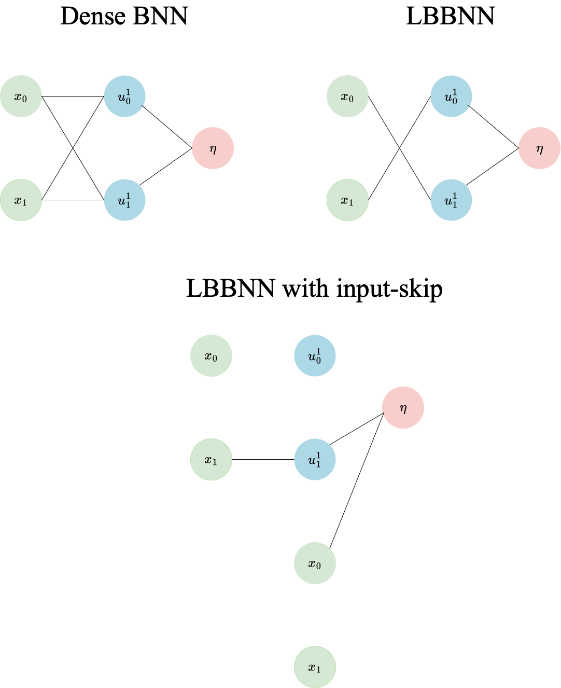
4 Package description
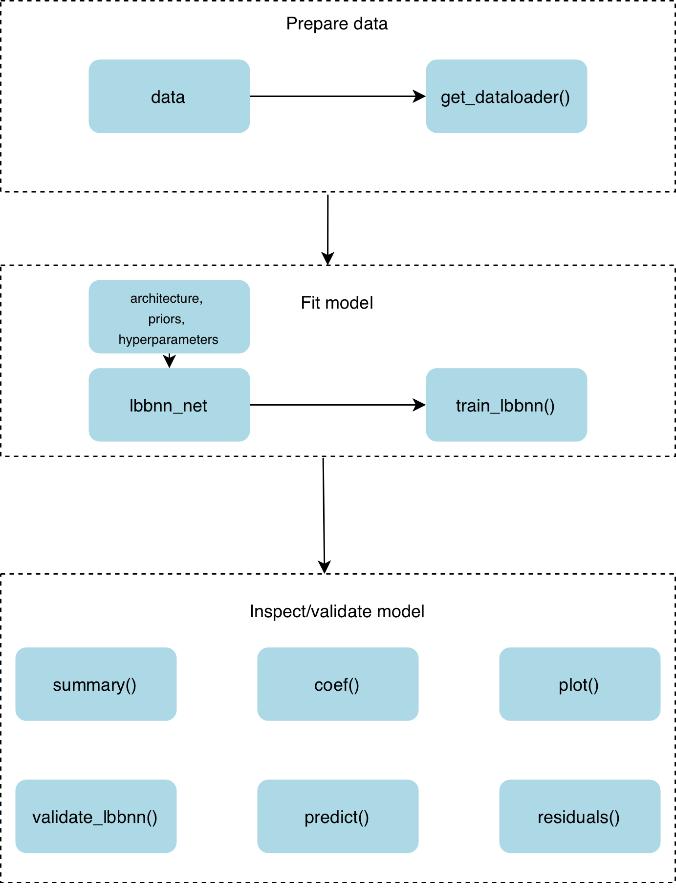
The main goal of LBBNN is to provide a framework to train Latent Binary
Bayesian Neural Networks in R, using the torch package for high
performance computation, while providing a user-friendly interface. For
an overview of the workflow of the package, see Figure
2. We implement many of the generic R
functions such as summary(), coef() and plot() to facilitate clear
and understandable output. These utility functions support both standard
LBBNN architectures, and LBBNN with input-skip. We hope to make LBBNNs
available for both statisticians and applied researchers, who work on
problems where data might be high dimensional and non-linear in nature,
and where the domain dictates that reliable uncertainty calibration and
explainability is desirable. Below we demonstrate five detailed examples
of how to use the package in practice.
The first two deal with synthetic data, while the last three use real world data. The first tutorial is self-contained, whereas for the remaining tutorials we only report the most central details and refer the reader to the supplementary material for the full code needed to reproduce the examples.
Tutorial 1: Simulation study with linear effects
In the first example, we generate data in the following way: \[\begin{align*} x_{ij}&\sim \mathcal{N}(0,1)\\ y_i &= 0.6x_{i0}-0.4x_{i1} +0.5x_{i2} + \mathcal{N}(0,0.1), \end{align*}\] with \(i = 1000\) and \(j = 15\). The goal is to check if the model is able to remove the non-relevant variables, in addition to recovering the true linear effects. The data is generated as follows:
library(LBBNN)
i <- 1000
j <- 15
set.seed(42)
torch::torch_manual_seed(42)
X <- matrix(rnorm(i * j, mean = 0, sd = 1), ncol = j)
y_base <- 0.6 * X[, 1] - 0.4 * X[, 2] + 0.5 * X[, 3] + rnorm(n = i, sd = 0.1)
sim_data <- as.data.frame(X)
sim_data <- cbind(sim_data, y_base)Data preprocessing.
In torch, it is common to use torch::dataloader objects to
automatically handle mini-batching1, shuffling and parallel loading
of the data when training the model. To avoid users having to interface
directly with this, we provide a wrapper, the get_dataloaders()
function:
loaders <- get_dataloaders(sim_data, train_proportion = 0.9,
train_batch_size = 450, test_batch_size = 100,
standardize = FALSE)
train_loader <- loaders$train_loader
test_loader <- loaders$test_loaderThe function returns one loader with training data and one with test
data. In addition, sim_data is a data.frame object with 1000 rows
and 16 columns (the last being the target). In this example, we randomly
select 900 samples for the training data, divided into two batches, and
the remaining 100 as test samples.
Model setup.
Further, we define the following hyperparameters:
problem <- "regression"
sizes <- c(j, 5, 5, 1) # 2 hidden layers, 5 neurons in each
incl_priors <- c(0.5, 0.5, 0.5) #prior inclusion probability
stds <- c(1, 1, 1) #prior for the standard deviation of the weights
incl_inits <- matrix(rep(c(-10, 10), 3), nrow = 2, ncol = 3) #inclusion inits
device <- "cpu" #can also be 'gpu' or 'mps'In the above, inclinits refers to the initialization of the parameters
of the Bernoulli distribution governing weight inclusion, an important
hyperparameter, as it controls the initial density of the network. In
Tutorial 4, we go into more detail on different initialization
strategies. The initial inclusion probabilities are computed with the
logistic function,
\(\alpha_{\texttt{inits}} = \texttt{sigmoid(incl\_inits)}\), which in the
example above will give inclusion probabilities between
\(4.54\cdot10^{-5}\) and \(0.99995\). These hyperparameters are then used
when defining an lbbnnnet object:
model_linear <- lbbnn_net(problem_type = problem, sizes = sizes,
prior = incl_priors, inclusion_inits = incl_inits,
std = stds, input_skip = TRUE, flow = FALSE,
num_transforms = 2, dims = c(10, 10, 10),
raw_output = FALSE, custom_act = NULL,
link = NULL, nll = NULL,
bias_inclusion_prob = FALSE, device = device)The optional argument input_skip controls whether to use input_skip.
Further, flow is for using normalizing flows with variational
inference, where num_transforms and dims mean the number of
transformations for the flow, and the dimensions of the hidden layers of
the neural networks used in those transformations, respectively.
raw_output gives the outputs of the last layer before any
sigmoid/softmax transformation. Additionally, link and nll are for
the user to supply their own link and likelihood function.
bias_inclusion_prob determines whether the bias parameters should be
associated with inclusion indicators. Lastly, device gives the option
to move the training process to either mps or gpu devices.
Statistical inference.
For training, we use the function trainlbbnn, where we pass the
dataloader object defined earlier. In addition, epochs refers to the
number of epochs to train for, where one epoch is a complete pass
through the training dataset. lr defines the learning rate for the
optimizer:
train_lbbnn(epochs = 300, LBBNN = model_linear,
lr = 0.05, train_dl = train_loader, device = device)The training process can be monitored on the console:
Epoch 1, training: loss = 827.28314, density = 0.47692
Epoch 2, training: loss = 711.41266, density = 0.46667
Epoch 3, training: loss = 618.56586, density = 0.46154
...
Epoch 299, training: loss = 29.64363, density = 0.04615
Epoch 300, training: loss = 29.75975, density = 0.04615 Showing the loss and density (proportion of weights with inclusion
probabilities greater than 0.5) at each epoch. Using verbose = FALSE
in the trainlbbnn functions avoids printing to the console during
training. Furthermore, we use validate_lbbnn to validate the results
on unseen data:
validate_lbbnn(LBBNN = model_linear, num_samples = 10, test_dl = test_loader,
device = device)Here, num_samples refers to the number of samples from the variational
posterior distribution of the parameters. The output is then averaged
before making predictions. This typically improves performance compared
to using the posterior mean of the parameters. validatelbbnn returns
the following output:
$validation_error
[1] 0.1127498
$validation_error_sparse
[1] 0.1108399
$density
[1] 0.04615385
$density_active_path
[1] 0.01538462Where validation_error is the root mean squared error (RMSE) for the
full model (no pruning). validation_error_sparse is the RMSE for the
model where we have pruned away all the weights that are not included in
active paths, where active paths are defined as paths that connect an
input variable (directly, or via one or more hidden nodes) to the output
node. See (Høyheim et al. 2026) for a more formal definition of active
paths. density refers to the proportion of weights in the whole
network with a corresponding posterior inclusion probability larger than
0.5, whereas density_active_path only considers the weights included
in active paths. The densities are quite low, which makes sense as we do
not need many connections to represent the true data generative
mechanism in this example.
Results.
To further inspect the results, we can use summary(), which gives
information about which variables are included in active paths, and from
what layer. It also gives the average inclusion probabilities for each
layer, and overall:
summary(model_linear)Giving the following output:
Summary of lbbnn_net object:
-----------------------------------
Shows the number of times each variable was included from each layer
-----------------------------------
Then the average inclusion probability for each input from each layer
-----------------------------------
The final column shows the average inclusion probability across all layers
-----------------------------------
L0 L1 L2 a0 a1 a2 a_avg
x0 0 0 1 0.404 0.391 0.999 0.452
x1 0 0 1 0.500 0.408 0.999 0.504
x2 0 0 1 0.405 0.430 1.000 0.470
x3 0 0 0 0.402 0.464 0.022 0.396
x4 0 0 0 0.496 0.451 0.020 0.432
x5 0 0 0 0.405 0.384 0.023 0.361
x6 0 0 0 0.139 0.404 0.025 0.249
x7 0 0 0 0.414 0.482 0.023 0.409
x8 0 0 0 0.500 0.500 0.028 0.457
x9 0 0 0 0.435 0.309 0.022 0.340
x10 0 0 0 0.500 0.311 0.027 0.371
x11 0 0 0 0.323 0.322 0.027 0.296
x12 0 0 0 0.486 0.366 0.023 0.390
x13 0 0 0 0.404 0.308 0.027 0.326
x14 0 0 0 0.501 0.405 0.025 0.414
The model took 9.9429999999702 seconds to train, using cpuAs we can see, only the first three variables are included in active
paths (once each). This can also be visualized using the plot()
function, with the argument type = "global", to specify that we want
the global explanation:
plot(model_linear, type = "global", vertex_size = 7,
edge_width = 0.4, label_size = 0.4)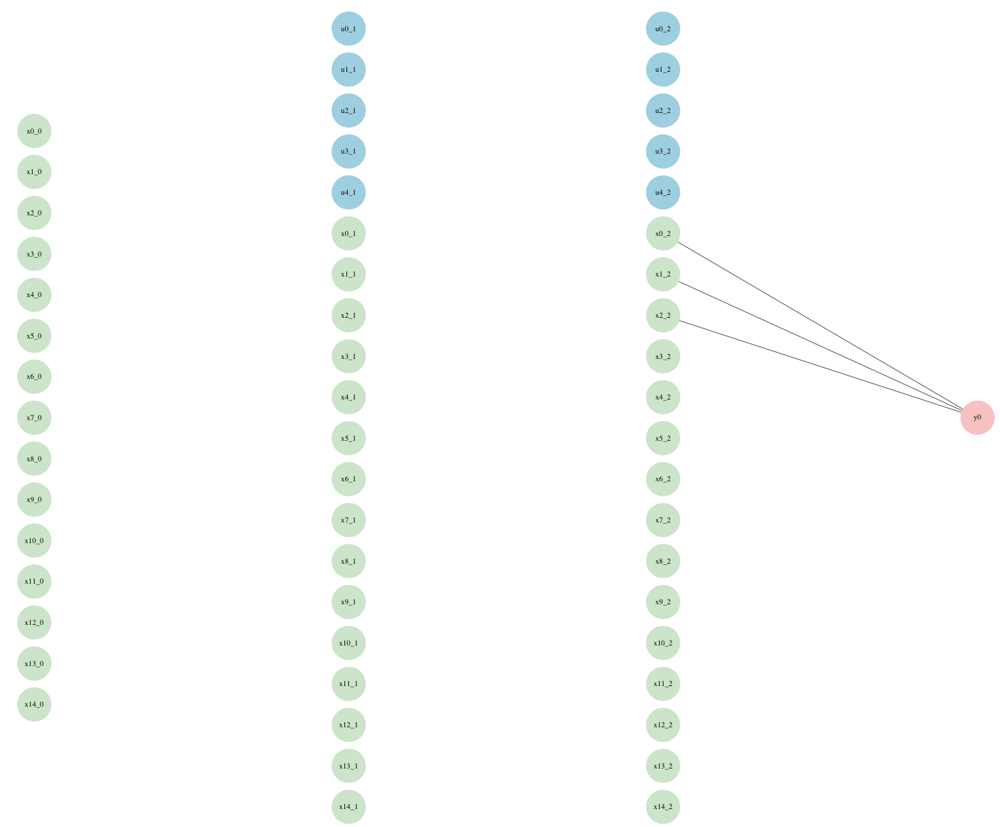
The plot can be seen in Figure
3. All connections are removed
aside from the linear connections from the three data generating
variables. To check if we recovered the true effects, we can obtain
local explanations of predictions for some data samples of interest,
using our version of coef() as follows:
coef(model_linear, dataset = train_loader, inds = NULL,
output_neuron = 1, num_data = 5, num_samples = 10)The dataset argument refers to which dataset to use, it could be
either a torch::dataloader object as in this case, or a user defined
dataset. If the user wants to select specific samples from the dataset,
then inds can be used to supply a vector of integers corresponding to
the indices. If we have more than one output neuron (as in the case of
multiclass classification), we get explanations for each output,
output_neuron controls which one to select. Further, num_data refers
to how many samples to select (randomly) from the given dataset, if no
indices are provided. Lastly, num_samples refers to how many samples
to use for model averaging over the weights in active paths. We report
the mean, and 95% confidence/credible intervals for the explanations. If
only one sample is used, the mean explanation and credible interval is
given from model averaging over the weights. If multiple samples are
selected, the overall mean explanation and confidence interval are
derived from the individual mean explanations of each individual data
sample.
For our example we obtain the following output:
lower mean upper
x0 0.5947226 0.6046016 0.6130178
x1 -0.4096843 -0.4018597 -0.3905376
x2 0.4884034 0.4964451 0.5038068
x3 0.0000000 0.0000000 0.0000000
...
x14 0.0000000 0.0000000 0.0000000The coefficients are very close to the true data generative ones, with
only the first three variables included, as we wanted. If we only want
to explain one specific sample, and also obtain the corresponding
output, we can visualize this through the plot() function as follows:
x <- train_loader$dataset$tensors[[1]] #grab the dataset
y <- train_loader$dataset$tensors[[2]]
ind <- 42
data <- x[ind, ] #plot this specific data-point
output <- y[ind]
print(output$item()) #get the true y
[1] -0.8379451
plot(model_linear, type = "local", data = data)The resulting plot can be seen in Figure 4.
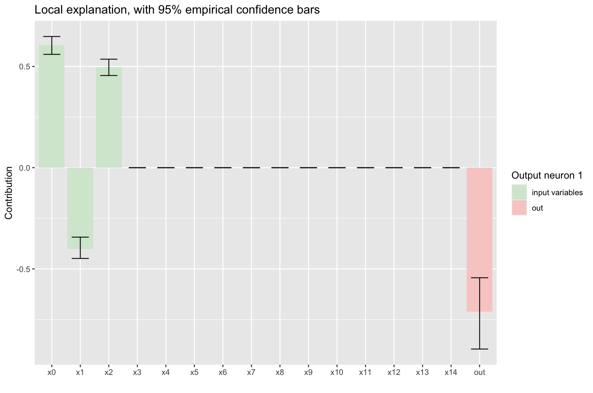
For a quick overview of the model and its parameters, print() is
useful:
print(model_linear)
========================================
LBBNN Model Summary
========================================
Module Overview:
- An `nn_module` containing 607 parameters.
---------------- Submodules ----------------
- layers : nn_module_list # 545 parameters
- layers.0 : lbbnn_linear # 235 parameters
- layers.1 : lbbnn_linear # 310 parameters
- act : nn_leaky_relu # 0 parameters
- out_layer : lbbnn_linear # 62 parameters
- out : nn_identity # 0 parameters
- loss_fn : nn_mse_loss # 0 parameters
Model Configuration:
- LBBNN with input-skip
- Optimized using variational inference without normalizing flows
Priors:
- Prior inclusion probabilities per layer: 0.5, 0.5, 0.5
- Prior std dev for weights per layer: 1, 1, 1
=================================================================Tutorial 2: Simulation study with non-linear effects
The data is generated in the following way: \[\begin{align*} x_{ij}&\sim U(0,0.5)\\ \eta(\boldsymbol{x}_{i}) &= -3 +0.1\log(x_{i0})+3\cos(x_{i1}) +2x_{i2}x_{i3} +x_{i4} -x_{i5}^2 + \mathcal{N}(0,0.1), \end{align*}\] With \(i = 1000\) and \(j = 15\). In this case, we further transform the output into a binary variable: \[\begin{align*} {y_i} = \begin{cases} 0, \quad \eta(x_i) < \text{median}(\eta(x_i)) \\ 1, \quad \eta(x_i) \geq \text{median}(\eta(x_i)). \end{cases} \end{align*}\] Otherwise we use mostly the same hyperparameters as in the previous example, however since we now have a binary output, we specify:
problem <- "binary classification"In addition, we use normalizing flows, setting the argument
flow = TRUE when initializing the model object. Training, otherwise,
is done in exactly the same way as in the previous example. To check the
results we again start with validate_lbbnn:
validate_lbbnn(LBBNN = model_nl, num_samples = 100, test_dl = test_loader_nl,
device = device)
$accuracy_full_model
[1] 0.87
$accuracy_sparse
[1] 0.86
$density
[1] 0.1384615
$density_active_path
[1] 0.08717949We get around 86% accuracy with what appears to be a sparse network. To
investigate the global structure of the network, we can use the plot()
function again, specifying that we are interested in the global
explanation:
plot(model_nl, type = "global", vertex_size = 9,
edge_width = 0.4, label_size = 0.4)The results are displayed in Figure 5. From this, we see that all weights related to the irrelevant variables \(x_6 -x_{14}\) have been pruned away, leaving us with a very sparse representation of effects for data-generating covariates.
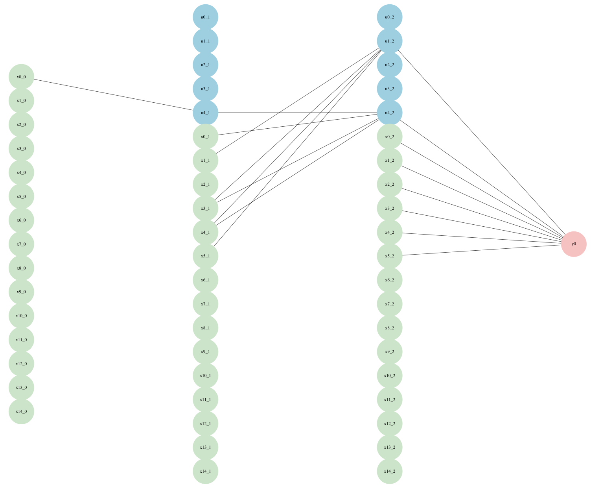
Tutorial 3: Real data classification experiment
For this experiment, we use the Gallstone dataset (Esen et al. 2024) from the UCI machine learning repository. It consists of data from 319 individuals, where 161 were diagnosed with gallstone disease. It contains a mix of demographic, bioimpedance and laboratory covariates. The workflow is the same as in the previous example, so we skip the detailed description.
For this problem, we use two hidden layers with three neurons in each, and train for 1000 epochs. We split the data 70/30 for training and validation, in line with the experiment described in (Esen et al. 2024), although we do not know the exact indices for the split, so the results may vary. In (Esen et al. 2024), the best result (85.42 \(\%\)) is obtained using gradient boosting. Our sparse input-skip model obtained an accuracy of \(83.33\%\), using only roughly 5\(\%\) of the total weights.
The sparse structure is shown in Figure 6. We see that the entire first hidden layer has been pruned away, and only two of the three nodes in the last hidden layer are used. Additionally, many variables only have connections from the last layer.
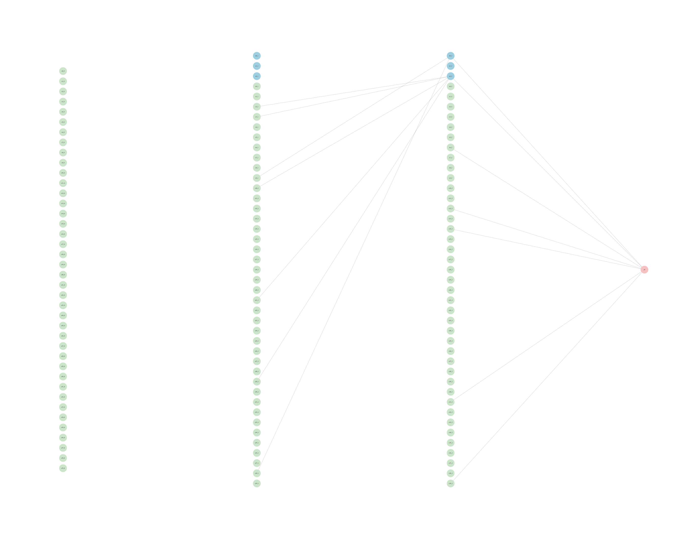
Our package includes a few more standard R functions such as predict()
and residuals() that we would like to demonstrate in this example.
Below we show how to use the former:
predictions_gs <- predict(model_gs, newdata = test_loader_gs,
draws = 100, mpm = TRUE)Where newdata is the dataset to predict, draws refers to the number
of posterior samples, and mpm refers to using the median probability
model. The output of predict is the raw network outputs before sigmoid
or softmax (or other link function) is applied. It is a
three-dimensional tensor:
dim(predictions_gs)
[1] 100 96 1where the axes correspond to draws, data points, and output units, respectively. For our case, the resulting tensor looks as:
print(predictions_gs)
torch_tensor
(1,.,.) =
-2.6755
0.2434
-3.2979
...
-1.3697
-0.3062
-1.5818
... [the output was truncated (use n=-1 to disable)]
[ CPUFloatType{100,96,1} ]Tutorial 4: Varying initializations on the raisin dataset
Results (accuracy, final network structure) can be sensitive to some hyperparameters such as number of epochs, or the initializations of the probability of the inclusion parameters. More generally, LBBNNs (with or without input-skip) can present optimization challenges, as the joint optimization over weights and inclusion parameters may lead to unstable training dynamics. The commonly used Adam optimizer, which we employ, was not designed for this type of problem. In future work, we aim to develop optimization strategies specifically tailored to LBBNNs.
This example will go into more detail on initialization strategies for
the inclusion probabilities, and will present the user with different
options. As mentioned previously, they are initialized as follows:
\[\begin{align*}
U &\sim\texttt{Uniform(a,b)} \\
\alpha_{\texttt{init}}&=\texttt{sigmoid}(U).
\end{align*}\]
As an alternative to providing the values for a and b, we allow the
user to also submit the keywords found in Table
2.
Figure 7
provides a visualization of the initial distribution of the resulting
Bernoulli probabilities, \(\alpha_{\texttt{init}}\).
| Keyword | balanced | dense | polarized | polarized_dense | polarized_mild | polarized_sparse | sparse |
|---|---|---|---|---|---|---|---|
| a | -1 | 1.5 | -10 | -5 | -3 | -10 | -2.5 |
| b | 1 | 2.5 | 10 | 10 | 3 | 5 | -1.5 |
| a \(\rightarrow \alpha_{\texttt{lower}}\) | 0.27 | 0.82 | \(\sim\)0 | 0.01 | 0.05 | \(\sim\)0 | 0.08 |
| b \(\rightarrow \alpha_{\texttt{upper}}\) | 0.73 | 0.92 | \(\sim\)1 | \(\sim\)1 | 0.95 | 0.99 | 0.18 |
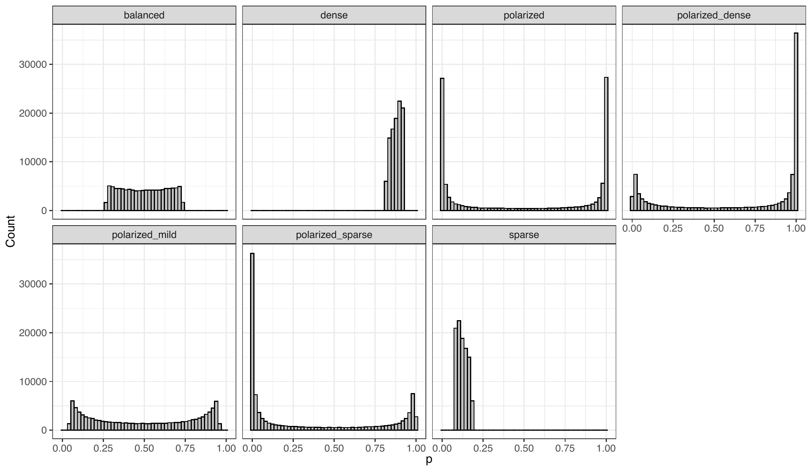
In the following experiment, we use the raisin dataset (Çinar et al. 2020), consisting of 900 samples, where the goal is to classify two types of raisins based on 7 morphological features. We use a network with 3 hidden layers, each consisting of 10 neurons. Of the 900 samples, 720 are used for training and 180 for validation. We compare results with different initialization, where the model is now defined as:
model_raisins <- lbbnn_net(problem_type = problem,sizes = sizes,
prior = inclusion_priors,
inclusion_inits = 'balanced',input_skip = TRUE,
std = stds, flow = FALSE, device = device)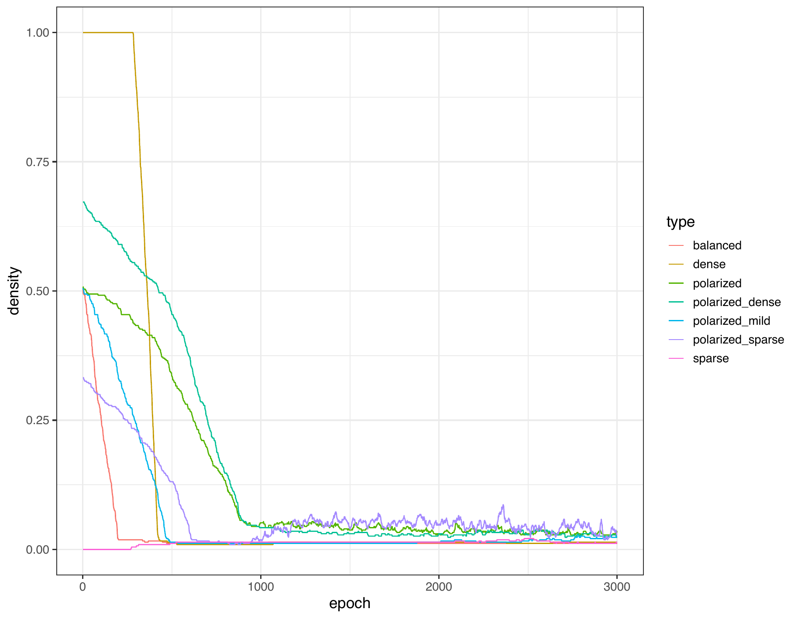
Figure 8
displays the densities during training for the different
initializations. In the dense case, the density is 1 for around 300
epochs, before it quickly approaches something close to 0. We see that
the polarized options take longer to converge to low sparsities, but in
the end, all initializations lead to very sparse networks after training
for 3000 epochs. As a very low density may not be desirable in all
situations, we include a tuning parameter for the minimum allowed
density, such that training is terminated if this value is reached. It
can be done using the min_density keyword inside the train_lbbnn
function:
results_raisins <- train_lbbnn(epochs = 3000,LBBNN = model_raisins, lr = 0.005,
train_dl = train_loader_raisin, device = device,
min_density = NULL)For this example, we did not use a minimum density, but trained for 3000 epochs, to ensure convergence. The results on the validation data can be seen in Table 3. We see that the resulting networks are very sparse, using around \(1-2\%\) of the weights. Despite this, accuracy is good and comparable to the results reported in the original paper (Çinar et al. 2020), 0.8633 accuracy using a frequentist neural network. In Figure 9 the global structures with the different initializations are shown.
| Initialization | accuracy | sparse accuracy | density | density active paths |
|---|---|---|---|---|
| balanced | 0.8556 | 0.8556 | 0.0118 | 0.0118 |
| dense | 0.8611 | 0.8667 | 0.0141 | 0.0141 |
| polarized | 0.8667 | 0.8722 | 0.0351 | 0.0258 |
| polarized_dense | 0.8556 | 0.8556 | 0.0234 | 0.0211 |
| polarized_mild | 0.8611 | 0.8611 | 0.0258 | 0.0141 |
| polarized_sparse | 0.8556 | 0.8556 | 0.0281 | 0.0094 |
| sparse | 0.8722 | 0.8611 | 0.0141 | 0.0094 |
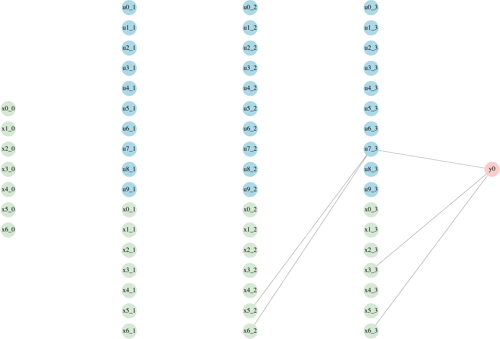

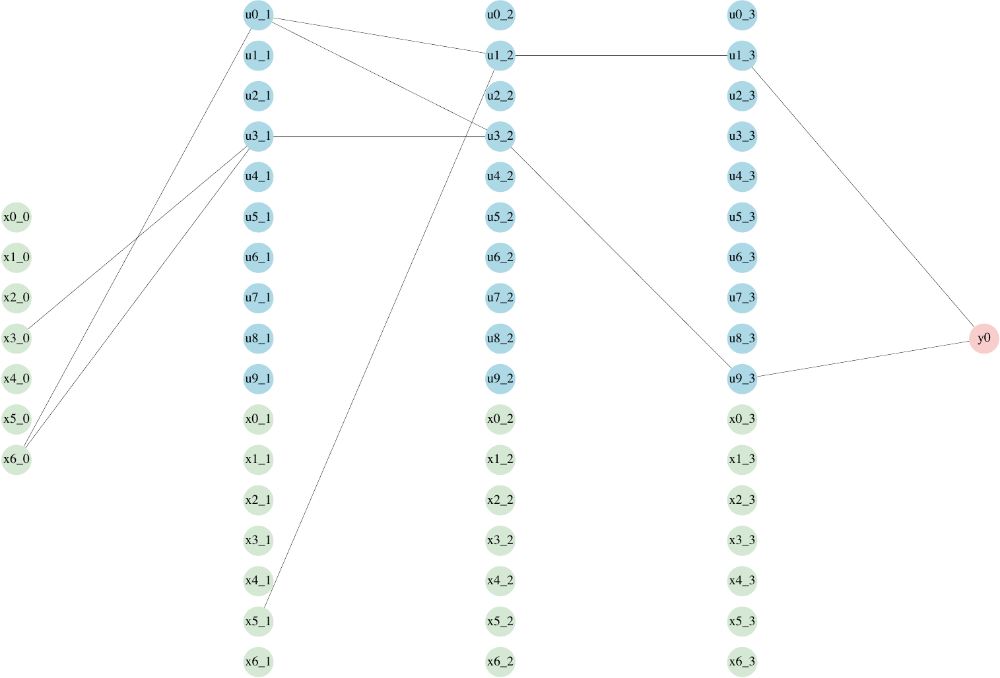
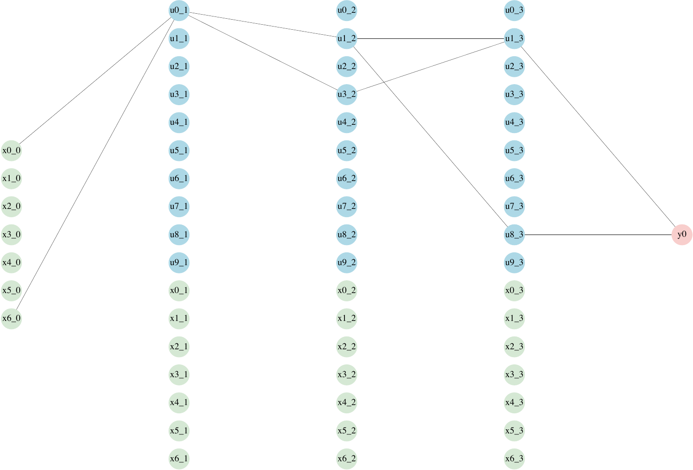
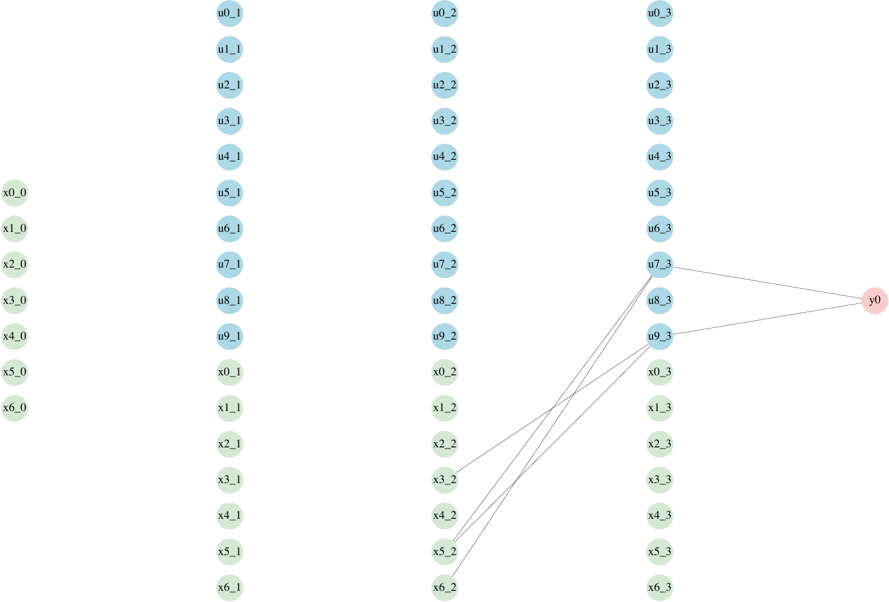
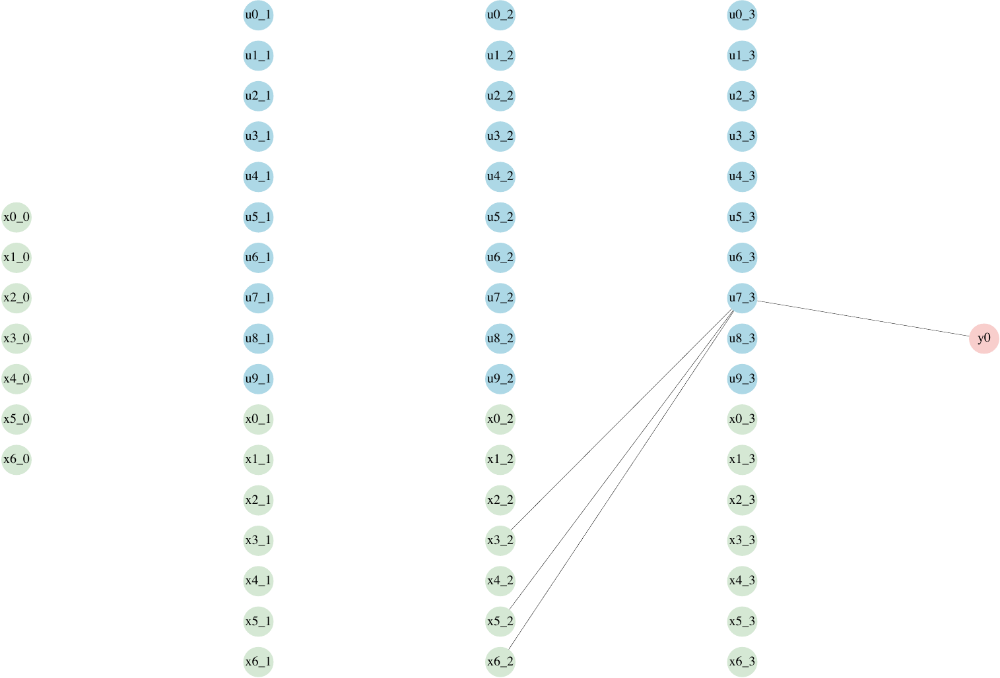
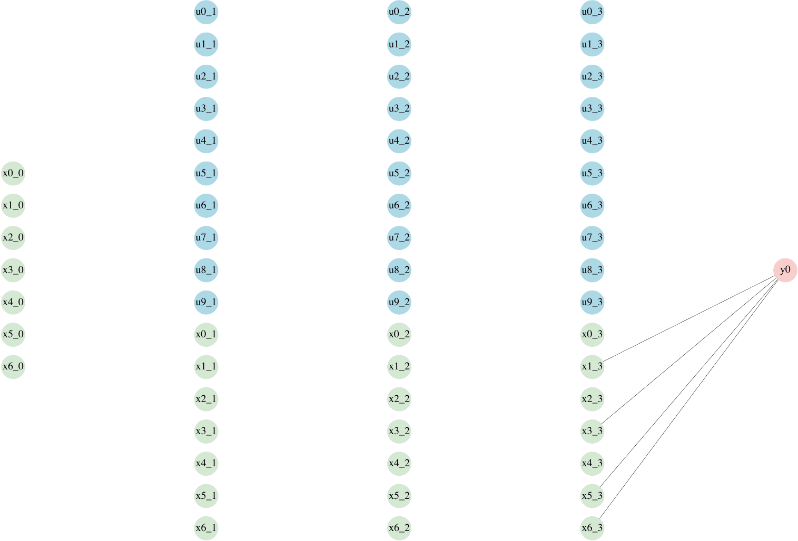
Tutorial 5: Extending the LBBNN to a convolutional architecture
In this tutorial, we demonstrate an example on how to extend LBBNN. The
specific extension is a Bayesian convolutional neural network (CNN),
using lbbnn_linear and lbbnn_conv2d for feed-forward and
convolutional LBBNN layers respectively. We have previously used
lbbnn_linear layers internally when defining lbbnn_net objects, but
here we will go into more details about how to explicitly define the
layers needed in a CNN architecture. We do not use input-skip in this
example, for simplicity.
We use the KMNIST dataset (Clanuwat et al. 2018), consisting of 70,000 grayscale images (28x28 pixels) of handwritten Japanese Hiragana characters, with 10 different classes, providing a much larger and higher dimensional dataset than the previous examples. KMNIST is considered a more challenging alternative to the classical MNIST dataset, commonly used to benchmark novel machine learning methods. Some examples of what these images look like can be seen in Figure 10.
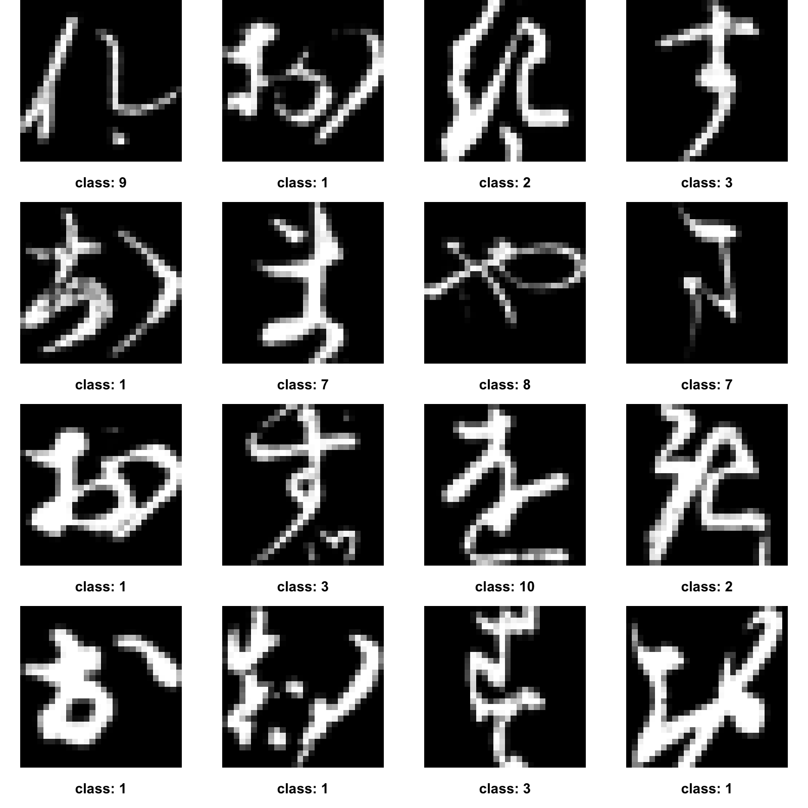
To begin, we download the dataset using the torchvision package, and
create dataloaders, this time using torch directly:
torch::torch_manual_seed(42)
dir <- "./dataset/kmnist"
train_ds <- torchvision::kmnist_dataset(
dir,
download = TRUE,
transform = torchvision::transform_to_tensor)
test_ds <- torchvision::kmnist_dataset(
dir,
train = FALSE,
transform = torchvision::transform_to_tensor)
# define dataloaders
train_loader_kmnist <- torch::dataloader(train_ds, batch_size = 100, shuffle = TRUE)
test_loader_kmnist <- torch::dataloader(test_ds, batch_size = 100)The dataset is split into 60,000 training samples and 10,000 test samples, loaded into the corresponding dataloaders. For the CNN architecture, we use two convolutional layers, and then two fully connected layers. The convolutional layers are defined as follows:
device <- "cpu"
conv_layer_1 <- lbbnn_conv2d(in_channels = 1, out_channels = 32, kernel_size = 5,
prior_inclusion = 0.5, standard_prior = 1,
density_init = c(-10, 10), num_transforms = 2,
flow = FALSE, hidden_dims = c(200, 200),
device = device)
conv_layer_2 <- lbbnn_conv2d(in_channels = 32, out_channels = 64, kernel_size = 5,
prior_inclusion = 0.5, standard_prior = 1,
density_init = c(-10, 15), num_transforms = 2,
flow = FALSE, hidden_dims = c(200, 200),
device = device)Here, we used ’cpu’ device for compatibility across platforms, however
for this example to run faster, we recommend using ’gpu’ or ’mps’
devices upon availability 2. Further, in_channels refers to the
number of input channels to the layer, which is 1 for grayscale images
such as KMNIST. out_channels refers to the number of channels or
feature maps produced by the convolutional layer. kernel_size
specifies the dimensions of the convolutional filter applied to the
input. For example, a kernel_size of 5 corresponds to a 5x5 filter.
The rest of the arguments are the same as those used to define
lbbnn_net objects in previous examples. Further, we define the
following fully-connected layers:
linear_layer_1 <- lbbnn_linear(in_features = 1024, out_features = 300,
prior_inclusion = 0.5, standard_prior = 1,
density_init = c(-10, 10), num_transforms = 2,
flow = FALSE, hidden_dims = c(200, 200), device = device,
bias_inclusion_prob = FALSE, conv_net = TRUE)
linear_layer_2 <- lbbnn_linear(in_features = 300, out_features = 10,
prior_inclusion = 0.5, standard_prior = 1,
density_init = c(-5, 15),num_transforms = 2,
flow = FALSE, hidden_dims = c(200, 200), device = device,
bias_inclusion_prob = FALSE, conv_net = TRUE)After pooling each convolutional layer and flattening the output of the
final layer, we obtain 1,024 input features to the first layer, where
out_features refers to the number of hidden neurons in that layer. For
the final layer, we have \(10\) out_features, as there are 10 possible
classes. The argument conv_net is used to skip the computation of
active paths. The model class is defined as follows:
LBBNN_ConvNet <- torch::nn_module(
"LBBNN_ConvNet",
initialize = function(conv1, conv2, fc1 ,fc2 ,device = device) {
self$problem_type <- "multiclass classification"
self$input_skip <- FALSE
self$conv1 <- conv1
self$conv2 <- conv2
self$fc1 <- fc1
self$fc2 <- fc2
self$pool <- torch::nn_max_pool2d(2)
self$act <- torch::nn_leaky_relu()
self$out <- torch::nn_log_softmax(dim = 2)
self$pout <- torch::nn_softmax(dim = 2)
self$loss_fn <- torch::nn_nll_loss(reduction = "sum")
},
forward = function(x, MPM = FALSE, predict = FALSE) {
x = self$act(self$conv1(x, MPM))
x = self$pool(x)
x = self$act(self$conv2(x, MPM))
x = self$pool(x)
x = torch::torch_flatten(x,start_dim = 2)
x = self$act(self$fc1(x, MPM))
if(!predict)
x = self$out(self$fc2(x ,MPM))
else
x = self$pout(self$fc2(x ,MPM))
},
kl_div = function(){
kl <- self$conv1$kl_div() + self$conv2$kl_div() +
self$fc1$kl_div() + self$fc2$kl_div()
return(kl)
},
density = function(){
alphas <- NULL
l1 <- self$conv1$lambda_l$clone()$detach()
l2 <- self$conv1$lambda_l$clone()$detach()
l3 <- self$fc1$lambda_l$clone()$detach()
l4 <- self$fc2$lambda_l$clone()$detach()
alphas <- c(as.numeric(torch::torch_sigmoid(l1)),
as.numeric(torch::torch_sigmoid(l2)),
as.numeric(torch::torch_sigmoid(l3)),
as.numeric(torch::torch_sigmoid(l4)))
return(mean(alphas > 0.5))
},
compute_paths = function(){
NULL
},
density_active_path = function(){
NA
}
)The initialize method runs automatically each time an instance of
LBBNN_ConvNet is created, setting up the network layers and additional
parameters. As well as the layers mentioned, we also define the pooling
layer, output layer, activation function and loss function here. The
method forward applies two convolutional layers, each followed by a
LeakyReLU activation function and max-pooling. The resulting feature
maps are flattened and passed through a fully connected layer with
LeakyReLU, and then through a final output layer. The argument MPM
refers to the median probability model. When TRUE, only weights with a
corresponding inclusion probability greater than 0.5 are used. predict
refers to whether the forward pass is used in the prediction mode,
returning class probabilities. Further, kl_div is used to compute the
KL-divergence of the network, which is the sum of the individual
KL-divergences between the prior and posterior (variational)
distribution of the weights and inclusion parameters for each
independent layer. This is added to the loss function of the network. To
compute the density (proportion of weights in the network with inclusion
probability larger than 0.5) we use the density method. Lastly,
compute_paths and density_active_path need to be defined (but not do
anything) so that the same training and validation functions as in
previous examples can be used. We can now define an instance of the
model and move it to the device:
model_kmnist <- LBBNN_ConvNet(conv_layer_1, conv_layer_2, linear_layer_1,
linear_layer_2, device)
model_kmnist$to(device = device)We now use train_lbbnn, training for \(20\) epochs with a learning rate
of \(0.001\):
train_lbbnn(epochs = 20, LBBNN = model_kmnist, lr = 0.001, train_dl = train_loader_kmnist,
device = device)During training, the loss, accuracy and density can be monitored just as in the standard LBBNN:
Epoch 1, training: loss = 2861.02612, acc = 0.84528, density = 0.47281
Epoch 2, training: loss = 2516.05835, acc = 0.95975, density = 0.44291
Epoch 3, training: loss = 2209.72510, acc = 0.97410, density = 0.40780
...
Epoch 20, training: loss = 233.06529, acc = 0.95875, density = 0.03716Finally, we validate the network on the unseen test data, with 10 samples for model averaging:
validate_lbbnn(model_kmnist, num_samples = 10, test_dl = test_loader_kmnist, device = device)Giving the following output:
$accuracy_full_model
[1] 0.9355
$accuracy_sparse
[1] 0.9259
$density
[1] 0.03715523
$density_active_path
[1] NAThe accuracy is lower than during training, as one can expect. It could be improved by training for longer, or using normalizing flows as shown in (Skaaret-Lund et al. 2024), but the purpose here is not to obtain the best possible results, but rather demonstrate how a simple convolutional LBBNN can be created. We note that convolutional LBBNNs can also be very sparse without sacrificing too much predictive power in this case. Active paths are not defined for convolutional architectures, hence density within them is not available for this example.
As we now are working with a different object than the standard
lbbnn_net object used earlier, our versions of generic R functions
such as summary() and coef() will not work. We can still use
print(), as this will use the torch version, and LBBNN_ConvNet is
a torch::nn_module object. Below is the output:
print(model_kmnist)
An `nn_module` containing 1,087,412 parameters.
--Modules --------------------------------
• conv1: <lbbnn_conv2d> #2,464 parameters
• conv2: <lbbnn_conv2d> #153,728 parameters
• fc1: <lbbnn_linear> #922,200 parameters
• fc2: <lbbnn_linear> #9,020 parameters
• pool: <nn_max_pool2d> #0 parameters
• act: <nn_leaky_relu> #0 parameters
• out: <nn_log_softmax> #0 parameters
• loss_fn: <nn_nll_loss> #0 parametersThe prediction function is not per default available for a convolutional network class, so we have to make predictions manually (or wrap it in a separate function). Below we show how to perform predictions manually:
draws <- 20 # how many samples from posterior to use
out_dim <- 10 # dimensionality of the output
mpm <- TRUE # if to use the MPM
model_kmnist$eval() # to avoid gradient computations
predictions_kmnist <- NULL
torch::with_no_grad({
coro::loop(for (b in test_loader_kmnist)# go through all data
{
outputs <- torch::torch_zeros(draws,dim(b[[1]])[1],out_dim)$to(device=device)
for(i in 1:draws)# go through all draws
{
data <- b[[1]]$to(device = device)
outputs[i]<- model_kmnist(data, MPM = mpm, predict = TRUE)
}
predictions_kmnist <- torch::torch_cat(c(predictions_kmnist, outputs), dim = 2) #combine all
})
})Here we used 20 draws from the posterior per sample and we have 10 classes in the response. So, the dimension of the responses is
dim(predictions_kmnist)
[1] 20 10000 10And we can take a look into the first 5 draws of the 255th3 predicted image posteriors:
idx1 <- min(255, dim(predictions_kmnist)[2])
print(torch::torch_round(predictions_kmnist[1:5, idx1, ], 4))
torch_tensor
0.0096 0.0183 0.6126 0.0018 0.0215 0.0228 0.0546 0.2543 0.0028 0.0016
0.0006 0.0002 0.9166 0.0020 0.0218 0.0180 0.0367 0.0020 0.0017 0.0002
0.0018 0.0108 0.2626 0.0058 0.2404 0.3693 0.0863 0.0215 0.0003 0.0014
0.0056 0.0463 0.1627 0.0050 0.0088 0.2112 0.2470 0.3102 0.0029 0.0003
0.0001 0.0003 0.6468 0.0008 0.0056 0.3341 0.0116 0.0003 0.0004 0.0000
[ CPUFloatType{5,10} ]In this specific case we see some uncertainty between different classes. If we look at the first 5 draws of the 258th predicted image posteriors, we see significant confidence in class 5:
idx2 <- min(258, dim(predictions_kmnist)[2])
print(torch::torch_round(predictions_kmnist[1:5, idx2, ], 4))
torch_tensor
0.0001 0.0001 0.0000 0.0000 0.9993 0.0000 0.0000 0.0003 0.0000 0.0001
0.0017 0.0000 0.0001 0.0000 0.9947 0.0001 0.0003 0.0007 0.0002 0.0022
0.0041 0.0035 0.0001 0.0005 0.7902 0.0021 0.0004 0.0136 0.0000 0.1854
0.0001 0.0000 0.0000 0.0000 0.9987 0.0000 0.0010 0.0002 0.0000 0.0000
0.0010 0.0005 0.0000 0.0001 0.9948 0.0001 0.0000 0.0024 0.0009 0.0002
[ CPUFloatType{5,10} ]5 Summary
We have created a package that implements LBBNNs in R. It offers the
possibility to use normalizing flows for a more flexible variational
posterior distribution than the mean-field Gaussian. In addition,
input-skip allows for a more flexible architecture where the concept of
active paths can lead to very sparse representation, and thus obtaining
global interpretability. While local explanations are further available
and proven to be exact for piecewise linear activations. Our package is
the first R package implementing LBBNNs using torch, facilitating GPU
acceleration using the LibTorch backend.
In our examples, we demonstrate how to use our package, both on toy data
and real-world datasets. On the latter, our LBBNN model with input-skip
obtains high accuracy with sparse networks, while also providing local
explanations with uncertainty, easily accessible either through coef()
(with the possibility of aggregating multiple samples) or for
visualization of a single sample through plot(). Additional
information about the model can be obtained through summary(), showing
how many paths included each input variable from each layer, in addition
to the average inclusion probability for each layer, and overall. The
structure of the model and the number of total parameters can be seen
through print(). We further provided an example on how to extend the
package to work with convolutional architectures with image
classification applications, demonstrating that our package can also
handle high dimensional data. Further, the fundamental building blocks
used in that example could also be used to create much deeper
architectures, such as residual networks like ResNet-18, however, this
would come at the cost of significantly more parameters compared to the
roughly 1 million in our example.
Future work will focus on extending the LBBNN package to support deeper and more complex architectures like residual networks or transformers, explore alternative transformations for the normalizing flows, and, most importantly, develop novel LBBNN specific optimizers that can better handle model selection and the input-skip architecture in high-dimensional parameter settings.
6 Supplementary materials
Supplementary materials are available in addition to this article. It can be downloaded at RJ-2026-048.zip
7 Note
This article is converted from a Legacy LaTeX article using the texor package. The pdf version is the official version. To report a problem with the html, refer to CONTRIBUTE on the R Journal homepage.
We will not give here an introduction to
torchbut rather refer the reader to detailed tutorials here https://skeydan.github.io/Deep-Learning-and-Scientific-Computing-with-R-torch.↩︎For this specific example we achieved 1.7x speedup on a NVIDIA RTX 6000 Ada Generation 48GB GPU versus an Intel® Xeon® E5-2680 v4 @ 2.40GHz (56 threads) CPU, and when increasing batch size to 512 we got 2.1x speedup.↩︎
indexes are shuffled in torch data_loaders, so results might differ on a different seed.
↩︎